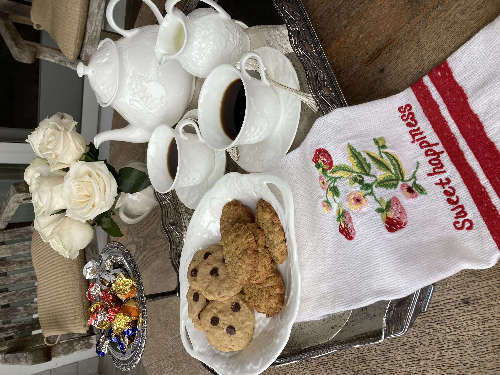
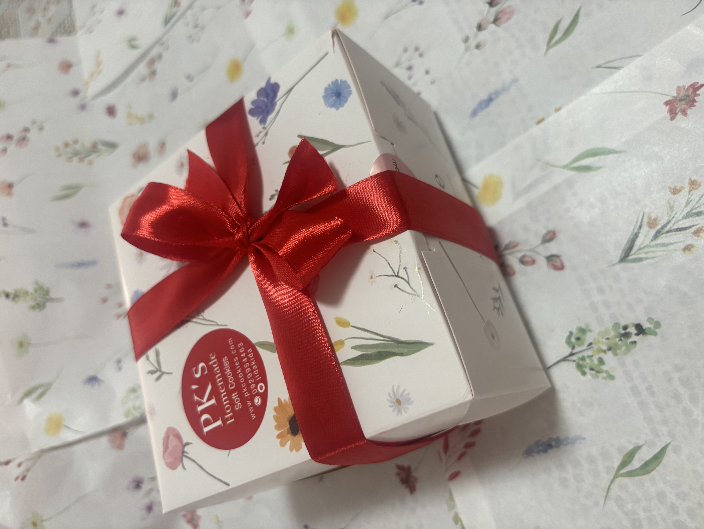

PK's Cookies

PK’s Cookies เริ่มขายสาขาแรก ที่กรุงเทพมหานคร ประเทศไทย วันที่ 3 ธันวาคม 2566 โดยได้รับกระแสตอบรับอย่างล้นหลาม เป็นคุ้กกี้ยอดฮิตเพื่อคนพิเศษ พร้อมความอร่อยที่หลากหลาย และเป็นเอกลักษณ์

PK’s Cookies เกิดจากความฝันของคนชอบกินคุ้กกี้นิ่ม แต่หาร้านที่ถูกใจไม่ได้ จนได้สูตรลับพิเศษจากคุณป้า ซึ่งอยู่ต่างประเทศมากว่า 50 ปี และได้พัฒนาสูตรจนได้พรีเมี่ยมโฮมเมดคุ้กกี้ เนยสดแท้ ใช้วัตถุดิบหลักนำเข้า ไม่ใส่วัตถุกันเสีย คัดสรรอย่างใส่ใจ เพื่อให้คุ้กกี้มีความอร่อย ได้รสสัมผัสที่พิเศษไม่เหมือนใคร และคุณภาพดี จนหลายคนติดใจ เหมาะกับทุกคนทุกวัย! ไม่ว่าจะเป็นสายหวาน สายเฮลท์ตี้ สายปาร์ตี้ เด็กหรือผู้ใหญ่ PK’s Cookies สูตรลับพิเศษนี้ จะเป็นตัวเลือกที่เหมาะสำหรับคุณ! เหมาะทุกโอกาส! ของขวัญที่คุณไม่ควรพลาด! ไม่ว่าจะเป็นปีใหม่ วันเกิด วันพิเศษหรืองานบุญต่างๆ หรือเป็นรางวัลให้ตัวเองและครอบครัว กินฟินคู่กาแฟ หรือชาแก้วโปรดของคุณในทุกวัน! คู่หู teatime! คู่หูปาร์ตี้! PK’s Cookies พิเศษทุกช่วงเวลา! ไม่ต้องรอช้า ลองสัมผัสความอร่อยและความนุ่มนวลในคุ้กกี้นิ่มสูตรลับพิเศษนี้เลย!
PK’s Cookies มี 5 เมนู
#PK 1 คุ้กกี้นิ่ม ช้อคโกแลตชิพ หวานละมุน นุ่มนวลอย่างลงตัว

#PK 2 คุ้กกี้ข้าวโอ๊ต กรอบกรุบนิดๆ หอมลมัย หวานน้อย รับคุณประโยชน์ข้าวโอ๊ตอย่างเต็มที่

#PK 3 คุ้กกี้แมคคาเดเมียนัท หอม มันส์ เต็มคำ

#PK 4 คุ้กกี้แครนเบอรี่ หวานซ่อนเปรี้ยว เคี้ยวเพลิน

#PK 5 คุ้กกี้เลมอน เปรี้ยว หวาน แซ่บลงตัว

ENJOY!


ราคาเซทละ 250 บาทพร้อมกล่อง ส่งทั่วไทย ค่าส่ง 50 บาท (ต่อ 2 เซท) ยกเว้นภูเก็ต ค่าส่ง 100 บาท (ต่อ 2 เซท) พรีออเดอร์เท่านั้น สำหรับงานอีเว้นท์ชิ้นละ 40 บาท ขั้นต่ำ 100 ชิ้น
เพื่อคงคุณภาพและความอร่อย PK’s Cookies จะมีการจัดรอบพรีออเดอร์ และรับจำนวนจำกัด กรณีงานอีเว้นท์ กรุณาจองคิวล่วงหน้า 7 วัน สามารถสอบถามรายละเอียด สั่งพรีออเดอร์ และสำรองคิว รับความอร่อยที่ไม่เหมือนใคร!

ได้เวลาส่งความสุข เสริฟ์ความอร่อยให้กับคุณและคนที่คุณรัก สั่ง PK’s Cookies ได้แล้ววันนี้!!!
โทร 092-995-4463 หรือ Line:jidakida